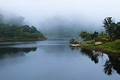

Discover Kerala

Trivandrum
Trivandrum, officially known as Thiruvananthapuram, is the capital city of the Indian state of Kerala. It is a vibrant and culturally rich city with a lot to offer.

Kollam
Kollam, also known as Quilon, is famous for its backwaters, Ashtamudi Lake, and historical significance. It's a gateway to the southern backwater destinations in Kerala.

Pathanamthitta
Pathanamthitta is known for its lush green landscapes and pilgrimage sites, including Sabarimala, a major Hindu pilgrimage destination.